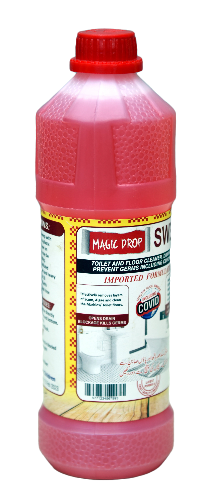

Magic Drop - Multi Cleaner
Multi Cleaner products play an essential role in our daily lives at home, in school and in the office. By safely and effectively removing soils, germs and other contaminants, they prevent the spread of infectious diseases and control allergens, such as dust and mold, helping us to stay healthy. Cleaning products also enable us to care for our homes and possessions.
Chemicals used for cleaning and in cleaning products, such as laundry detergents, bleaches, dishwashing products and other household cleaners, help improve cleaning efficiency, making homes, offices and other environments both easier to clean and more hygienic.
Uses & Benefits:
(a)_ Household cleaning products containing antibacterial cleaners not only remove dirt and soil, but they also can kill the germs that may cause illness and diseases.
(b)_ Household cleaning products can also be used in the daycare centers, hospitals, restaurants, universities, offices and other public facilities to keep the environment germ-free.
(c)_ Cleaning solvents are also common cleaning products. These solvents have good water compatibility, high solvency for greases and oils and good biodegradability.
